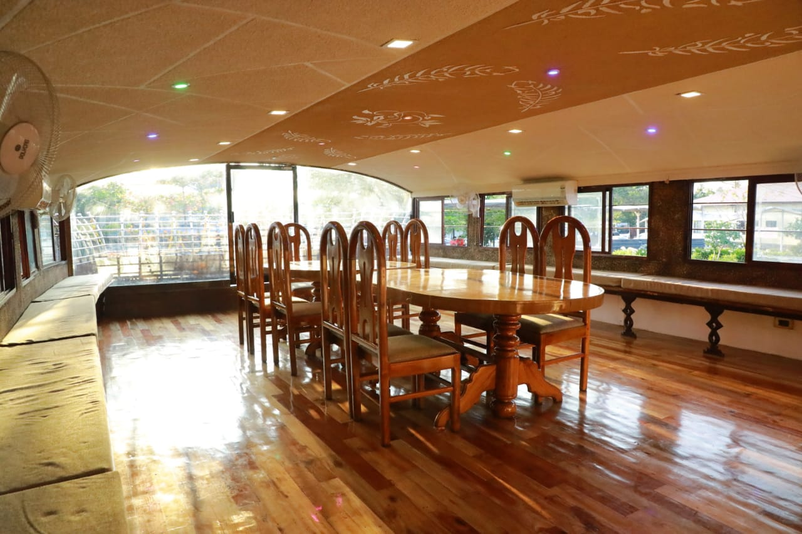
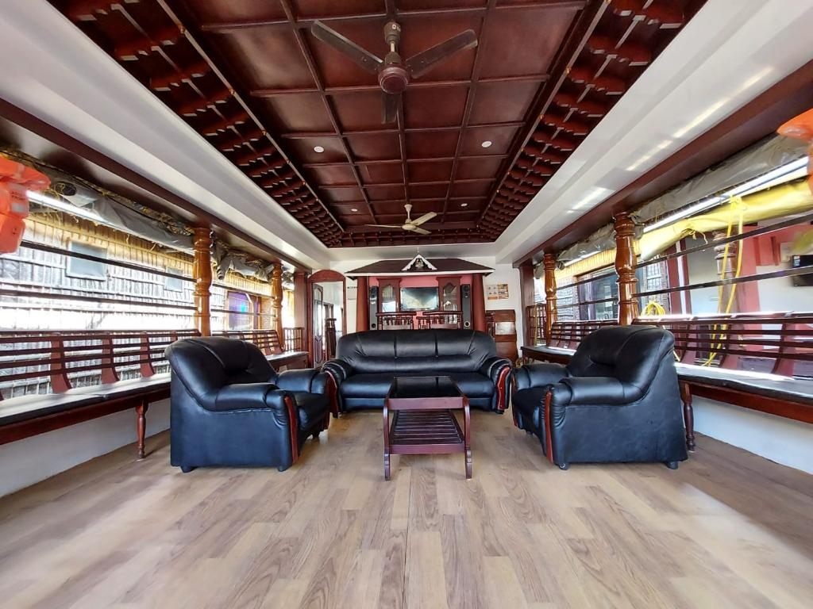

Munnar Expeditions
House Boat
On arrival
Welcome to your extraordinary houseboat adventure in Alleppey, Kerala. Arrive in the morning and be greeted with warm hospitality as you embark on a memorable journey through the backwaters.

At 12:00 PM, set sail on a captivating voyage through the serene waterways of Alleppey. Immerse yourself in the picturesque beauty of Kerala's backwaters, characterized by lush tea plantations, rolling hills, and abundant wildlife.
Relax on the houseboat's deck, feeling the gentle breeze caress your skin, as you glide through the stunning landscapes. Observe the vibrant flora and fauna along the banks, and witness the harmonious coexistence of nature's wonders.
Indulge in a mouthwatering lunch on board, featuring a variety of authentic Kerala dishes. Enjoy aromatic rice, flavorful sambar, fresh salad, and a delightful assortment of mixed vegetable preparations. Don't miss the opportunity to savor the local favorite, Pearl Spot fish fry, accompanied by banana kalan, crispy pappadam, and tangy pickle.
Evening
After a satisfying meal, spend a relaxing evening on the houseboat's deck. Indulge in a cup of freshly brewed coffee or tea, accompanied by scrumptious banana fritters. Take in the tranquil ambiance and capture the breathtaking views of the backwaters.
Immerse yourself in the serenity of the surroundings as you unwind from the day's adventures. Enjoy the peaceful atmosphere and let the beauty of Kerala's backwaters leave a lasting impression on your senses.
As the evening progresses, retire to the cozy bedroom on the houseboat. Relax in comfort and get a restful night's sleep, ready to embrace another day of exploration and relaxation in the backwaters of Kerala.
Next day Morning
Wake up to the beautiful surroundings of Kerala's backwaters. Enjoy a delicious breakfast featuring traditional dishes such as dosa or idly, accompanied by aromatic sambar and a cup of coffee or tea.
After breakfast, continue your houseboat journey through the captivating backwaters. Immerse yourself in the tranquility, capture stunning photographs, and create memories that will last a lifetime.
As the adventure comes to an end, disembark from the houseboat with a sense of fulfillment and a deep appreciation for the natural beauty of Kerala's backwaters.